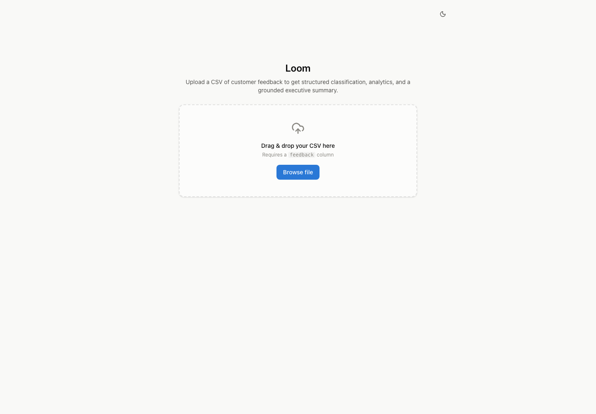
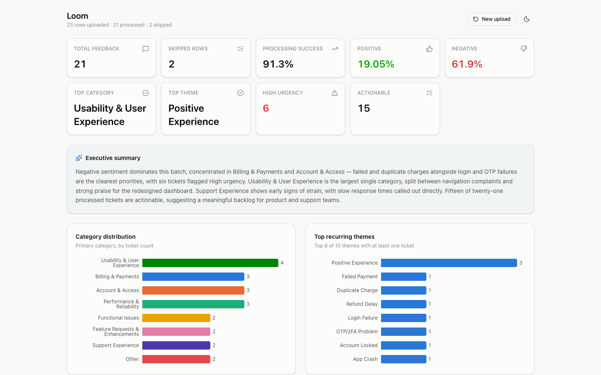
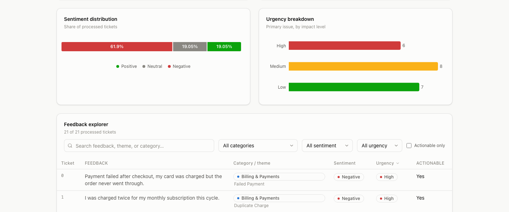

The model never counts, sums, averages, or calculates a percentage. Every number in analytics and in the executive summary is computed in Python.
Accepts a CSV of raw customer feedback and returns, in a single call: validated per-ticket classification, sentiment and urgency scoring, theme surfacing, aggregate analytics, and a grounded narrative summary — rendered on an interactive dashboard.
Every number a stakeholder sees is computed in deterministic Python, never by a language model. The model is used only where genuine language understanding is required — classification and narration — and every model response is schema-validated before it reaches analytics.
Loom converts raw, unstructured customer feedback into structured, business-ready insight. A single CSV upload — support tickets, survey responses, app store reviews — is validated, cleaned, classified against a fixed taxonomy, aggregated into KPIs, and summarized into a prioritized narrative, all in one request.
The system is built around one architectural decision that shapes everything else: language understanding and numeric computation are strictly separated. A language model classifies each ticket and phrases the final summary; every count, percentage, and distribution behind it is computed by ordinary, testable Python code. This keeps the numbers a stakeholder relies on fully deterministic and auditable, regardless of anything the model does.
Feedback arrives unstructured, at volume, and inconsistently worded. Manually reading and triaging hundreds of tickets is slow, and naive "ask an LLM to summarize this" approaches produce numbers that shift between runs and can't be trusted for reporting.
The same ticket must classify the same way every time — closed vocabularies, temperature 0, no free-text drift.
Every statistic on the dashboard is computed in Python from validated data — never generated, estimated, or phrased by a model.
One malformed row, timeout, or bad model response must never fail the batch — every ticket resolves to a valid result.
Personally identifying data is redacted before any text reaches a third-party model — by default, not as an opt-in.
The frontend never talks to the model directly, and the backend runs the entire pipeline inside a single stateless request — there is no session state, upload ID, or background job to track. The diagram below shows the full path from an uploaded CSV to a rendered dashboard.

With no database, a multi-step flow (upload → analyze → poll for a dashboard) would require holding uploaded data in server memory between requests, keyed by a session ID — fragile state that vanishes on restart and doesn't survive a second worker process. A single call matches the no-persistence design honestly, and the frontend holds the complete result in memory for the rest of the session.
Every uploaded row moves through the same ordered pipeline. Rows that fail validation are skipped and counted — they never reach classification and never enter analytics.
A single ticket can raise more than one issue — handled in the same classification call, never an extra one. The model identifies every distinct issue, picks one as primary (which carries full enrichment: category, theme, sentiment, urgency, actionable), and returns the rest as secondary issues carrying category, theme, and urgency. Headline analytics aggregate on the primary issue only, so a ticket is never double-counted.
The one place a secondary issue could silently disappear is summarization — so the summarization prompt is explicitly constrained to preserve every distinct problem, request, and complaint rather than compressing to a single topic.
Loom's first release is intentionally stateless — no database, no session state, so a single request is the entire lifecycle. What follows is the logical data model: the structured schema enforced by validation on every object the system produces, shown in entity-relationship form.

Every category, theme, sentiment, and urgency value is a closed set defined once and imported everywhere — prompts, validation, and analytics all derive from the same definition. An invented or mis-cased value fails validation rather than silently entering a chart, which is what makes the resulting statistics trustworthy.
Eight fixed top-level categories, each owning its own closed list of themes — a theme is only ever valid under its parent category, enforced by a two-tier selection (category, then theme from that category's list only).
| Category | Scope | Example Themes |
|---|---|---|
| Billing & Payments | Charges, refunds, failed/duplicate payments, subscriptions | Failed Payment, Duplicate Charge, Refund Delay |
| Account & Access | Login, passwords, OTP/2FA, lockouts | Login Failure, Password Reset, Account Locked |
| Performance & Reliability | The app fails to run properly | App Crash, Slow Performance, Downtime/Outage |
| Functional Issues | The app runs, but behaves wrong | Function Not Working, Incorrect Data Displayed |
| Feature Requests & Enhancements | Requests for new or improved capability | New Feature Request, Integration Request |
| Usability & User Experience | Works, but confusing — or genuinely praised | Confusing Navigation, Positive Experience |
| Support Experience | Feedback about the support process itself | Slow Response, Unhelpful Agent |
| Other | Uncategorized, unclear, or general feedback | General Feedback, Unclear |
| Field | Values | Definition |
|---|---|---|
| Sentiment | Positive · Neutral · Negative | Dominant overall sentiment — no "Mixed" value, no continuous score. |
| Urgency | High · Medium · Low | Impact-based, not tone-based: a calm "I can't log in" is High; an angry complaint about button color is Low. |
| Actionable | true / false | Whether the ticket requires follow-up by product, engineering, support, or business. |
These are the non-negotiable constraints the system is built against — every implementation decision is checked against them.
The model never counts, sums, averages, or calculates a percentage. Every number in analytics and in the executive summary is computed in Python.
Every model response is validated against a fixed schema before use — no free-text parsing, no regex-scraping of model prose.
Categories, themes, sentiment, and urgency are fixed enumerations. An invented or wrong-cased value fails validation rather than silently entering a chart.
Temperature 0, discrete outputs, and closed lists make the same input produce the same output — without needing a cache to force consistency.
Deterministic checks and PII redaction happen before a single token reaches the model.
Every ticket leaves classification with a valid result — success or a defined fallback shape. One malformed row or one timeout never fails the run.
Classification runs once during processing; the dashboard reads the already-structured result only.
Every classification response passes through a fixed, bounded recovery sequence — repair at most once, never loop, always end in a valid object.
Transient provider errors (rate limits, 5xx, timeouts) are retried separately with a short backoff and don't count against the one validation re-prompt. Authentication errors are never retried. Every unrecovered path — validation or provider — ends in the fallback shape, never a crash, and out-of-scope input (non-English text, spam) routes there gracefully too.
| Code | Meaning |
|---|---|
4001 | Missing feedback column |
4002 | Empty or unparseable CSV |
4003 | No valid feedback rows found after row validation |
4004 | Invalid model response, post-repair |
5001 | Provider unavailable |
Skipped rows are reported separately and never enter a percentage. Every dashboard percentage uses processed (valid) tickets as its denominator, with one deliberate exception: Processing Success Rate, which divides by total uploaded rows — because its entire purpose is measuring how many rows survived validation.
| Layer | Technology | Why |
|---|---|---|
| API | FastAPI | Async request handling, automatic OpenAPI docs |
| Validation | Pydantic v2 | Type-safe schema enforcement, closed enums, cross-field validators |
| Data handling | Pandas | CSV parsing and row-level processing |
| Classification | LLM structured output | Schema-constrained JSON generation at temperature 0 |
| Config | python-dotenv | Environment-based configuration, no hardcoded secrets |
| Layer | Technology | Why |
|---|---|---|
| Framework | React + TypeScript, Vite | Modular, type-safe UI with fast dev iteration |
| Styling | Tailwind CSS v4 | CSS-variable design tokens, light/dark theming |
| Charts | Recharts | Declarative, accessible dashboard visualizations |
| UI primitives | Hand-built, shadcn-style | Owned component source — cva + Tailwind, no external UI runtime |
api/ routes · pipeline/
validate, preprocess, classify, summarize · analytics/ pure aggregation ·
schemas/ taxonomy + models · services/ model client · prompts/
components/ui primitives ·
components/charts · hooks/ · api/ client ·
types/ mirroring backend schemas · pages/ dashboard
A single upload screen leads to a full dashboard: KPI cards, category/theme/sentiment/urgency charts, the grounded executive summary, and a searchable, filterable feedback explorer — all rendered client-side from the one API response, with no further calls to the backend.

feedback column.The KPI row, grounded executive summary, category distribution, and top recurring themes for a sample batch — each color assigned by a fixed identity order, never repainted by a filter.

Sentiment and urgency are rendered with the reserved status palette (not an arbitrary chart color) since both are literal status fields. The feedback explorer below them supports full-text search plus category, sentiment, urgency, and actionable-only filtering, with secondary issues surfaced as inline badges.

Each of the following is a documented, scoped extension that does not require reworking the classification pipeline — deliberately deferred to keep the first release simple, not overlooked.
| Capability | Trigger to build |
|---|---|
| Persistence & multi-period trends | Add SQLite once week-over-week deltas and new-theme detection are needed — the fixed taxonomy is already a stable ID vocabulary, so this drops in without touching the pipeline. |
| Duplicate-result caching | Arrives naturally once persistence exists (storage acts as cache); build sooner only if repeated re-processing becomes costly. |
| Non-English support | Currently routed gracefully to Other/Unclear; add language detection + translation once the dataset warrants it. |
| Spam / junk filtering | Add a pre-classification gate once real feedback streams introduce meaningful noise. |
| Emergent-theme detection | Monitor the "Other" rate as the signal; the automated version is embedding-based clustering. |
| Human review workflow | Build once a confidence signal exists to route low-confidence classifications for review. |
The Pydantic implementation behind the data model in Section 5 — the exact validators that enforce theme–category ownership and produce the fallback shape on unrecoverable failures. Docstrings and inline comments are omitted here for a clean listing; the complete, commented source ships alongside this report.
1class AdditionalIssue(BaseModel): 2 model_config = ConfigDict(extra="forbid") 3 4 category: Category 5 theme: Theme 6 urgency: Urgency 7 8 @model_validator(mode="after") 9 def theme_belongs_to_category(self) -> "AdditionalIssue": 10 if self.theme not in CATEGORY_THEMES[self.category]: 11 raise ValueError( 12 f"theme '{self.theme.value}' does not belong to category '{self.category.value}'" 13 ) 14 return self 15 16 17class LLMClassification(BaseModel): 18 model_config = ConfigDict(extra="forbid") 19 20 primary_category: Category 21 primary_theme: Theme 22 sentiment: Sentiment 23 urgency: Urgency 24 actionable: bool 25 additional_issues: list[AdditionalIssue] = Field(default_factory=list) 26 27 @model_validator(mode="after") 28 def primary_theme_belongs_to_category(self) -> "LLMClassification": 29 if self.primary_theme not in CATEGORY_THEMES[self.primary_category]: 30 raise ValueError( 31 f"primary_theme '{self.primary_theme.value}' does not belong to " 32 f"primary_category '{self.primary_category.value}'" 33 ) 34 return self 35 36 37class TicketClassification(LLMClassification): 38 ticket_id: str 39 feedback_text: str = "" 40 41 42def fallback_classification(ticket_id: str, feedback_text: str = "") -> TicketClassification: 43 return TicketClassification( 44 ticket_id=ticket_id, 45 feedback_text=feedback_text, 46 primary_category=Category.OTHER, 47 primary_theme=Theme.UNCLEAR, 48 sentiment=Sentiment.NEUTRAL, 49 urgency=Urgency.LOW, 50 actionable=False, 51 additional_issues=[], 52 )
The API response envelope returned by POST /analyze — the validation
report, the analytics aggregate, and the per-ticket items list, exactly as consumed by the
frontend's types/api.ts.
1class ValidationReport(BaseModel): 2 total_rows: int 3 processed: int 4 skipped: int 5 skip_reasons: dict[str, int] 6 7 8class RankedCount(BaseModel): 9 name: str 10 count: int 11 12 13class AnalyticsResult(BaseModel): 14 total_processed: int 15 total_skipped: int 16 category_distribution: dict[str, int] 17 sentiment_distribution: dict[str, int] 18 theme_frequency: dict[str, int] 19 urgency_distribution: dict[str, int] 20 urgency_distribution_with_additional: dict[str, int] 21 actionable_count: int 22 top_categories: list[RankedCount] 23 top_themes: list[RankedCount] 24 processing_success_rate: float 25 positive_pct: float 26 neutral_pct: float 27 negative_pct: float 28 high_urgency_count: int 29 30 31class AnalyzeResponse(BaseModel): 32 validation_report: ValidationReport 33 items: list[TicketClassification] 34 analytics: AnalyticsResult 35 summary: str
schema.py alongside this
report.